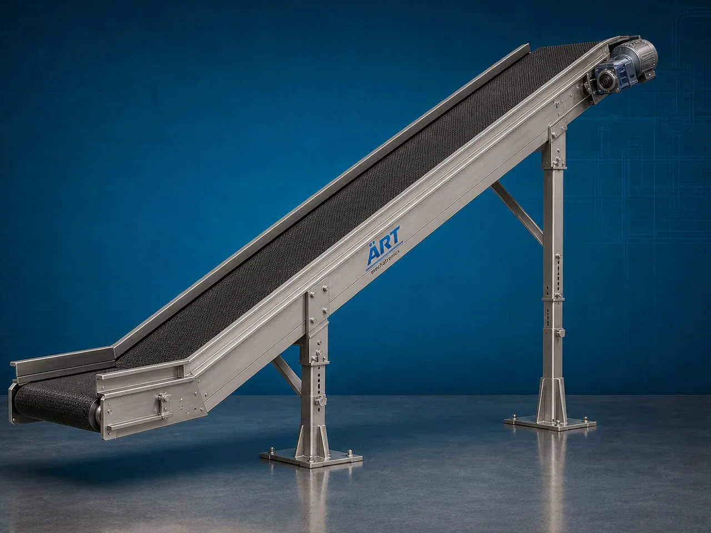

Inclined Conveyor Belt Machine (Industrial Inclined Material Handling & Transfer System)
An Inclined Conveyor Belt Machine, also known as an Industrial Inclined Belt Conveyor or Incline Conveyor System, is a highly efficient industrial material handling equipment designed for lifting, transferring, feeding, loading, unloading, and conveying products and bulk materials between different heights or elevations using an inclined moving belt system.

About the Inclined Conveyor Belt
Inclined conveyor systems improve:
- Production automation
- Material transfer efficiency
- Space utilization
- Labor reduction
- Process continuity
- Production line integration
The machine is widely used in industries such as:
Food processing industries
Packaging industries
Pharmaceutical industries
Grain processing plants
Snack manufacturing plants
Warehousing & logistics
Manufacturing industries
Chemical industries
where continuous upward or downward product transfer is essential.
The machine operates using:
- Motor-driven conveyor belts
- Inclined frame structures
- Cleated belts or sidewall belts
- Rollers and pulley systems
to move materials safely and efficiently between different process stages.
Inclined conveyor belt machines are highly suitable for:
- Vertical product transfer
- Packaging line feeding
- Bulk material conveying
- Hopper feeding systems
- Production line automation
- Material elevation applications
ART Mechatronics offers high-performance inclined conveyor belt machines, engineered for continuous industrial operation, heavy-duty performance, hygienic design, and reliable long-term material handling.
Working Principle of Inclined Conveyor Belt Machine
Products or bulk materials are loaded onto conveyor belt at lower inlet point
Electric motor drives conveyor pulley and belt system
Belt moves continuously along inclined frame structure
Machine transports:
- Powders
- Granules
- Grains
- Packets
- Boxes
- Cartons
- Food products upward or downward between process stages.
Cleats or sidewalls prevent material rollback during inclined movement
Conveyor speed and inclination angle optimized according to material type
Material discharged automatically at elevated or lower destination point
Types of Inclined Conveyor Belt Machines
- 1. Cleated Inclined Belt Conveyor
Uses: ✔ Cleated belt surface for transporting loose materials without slipping.
- 2. Sidewall Inclined Conveyor
Uses: ✔ Sidewall belt design for steep angle material transfer applications.
- 3. Food Grade Inclined Conveyor
Suitable for: ✔ Hygienic food and pharmaceutical industries
- 4. Bucket Type Inclined Conveyor
Designed for: ✔ Bulk product lifting and feeding systems
- 5. Modular Inclined Conveyor
Uses: ✔ Modular belt construction for flexible industrial layouts.
- 6. Heavy Duty Industrial Inclined Conveyor
Suitable for: ✔ Large-capacity industrial material handling applications
Industries Using Inclined Conveyor Belt Machine
🍃 Food Processing Industry Product lifting and conveying systems 📦 Packaging Industry Packaging line feeding and transfer 💊 Pharmaceutical Industry Hygienic product transportation 🌾 Grain Processing Industry Grain elevation and material transfer 🍟 Snack Manufacturing Industry Chips and namkeen transfer systems ⚗️ Chemical Industry Powder and granule conveying 🏭 Manufacturing Industry Production line automation systems 🚚 Warehousing & Logistics Box and carton handling systems
Features & Advantages
- Efficient inclined and vertical material transfer
- Improves production automation and workflow
- Reduces manual labor and handling effort
- Cleated belts prevent material rollback
- Continuous industrial operation
- Heavy-duty industrial construction
- Adjustable speed and inclination options
- Hygienic food-grade designs available
- Low maintenance and energy-efficient operation
Technical Highlights
Conveyor Type: Cleated belt conveyor Sidewall conveyor Modular inclined conveyor Construction: Stainless Steel / Mild Steel Belt Material: PVC PU Rubber Food-grade belts Drive System: Geared motor drive Variable frequency drive (VFD) Inclination: Adjustable angle options available Automation: Semi-automatic Fully automatic PLC-based systems
Turnkey Inclined Conveying Solutions
ART Mechatronics offers: Complete inclined conveyor systems Packaging and processing line integration Hopper and feeding system integration Material handling plant automation Installation & commissioning After-sales service & AMC
Why Choose Art Mechatronics
Expertise in industrial material handling systems Customized conveyor solutions for multiple industries High-performance and durable machine construction Energy-efficient and reliable industrial designs Proven industrial performance across sectors
Applications
Food Processing Plants Packaging Industries Pharmaceutical Manufacturing Units Grain Processing Plants Snack Manufacturing Facilities Industrial Automation Systems
Related Conveying & Handling machines
Get pricing & specs for the Inclined Conveyor Belt
Share the product, target capacity, current process and plant location. These details help our engineers discuss the right machine or line configuration.
One partner, from design to start-up
ART Mechatronics designs, manufactures, installs and commissions your Inclined Conveyor Belt solution with regional presence in India, UAE and Thailand.